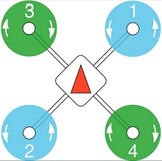

你知道四轴上有正反桨吗？
规格说明
螺旋桨一般有两种方式来标称：L x P x B 或者 LLPP x B。其中L是指浆直径，P是指叶片的螺距，B为桨叶的数量。 L和B比较好理解，P螺距则比较抽象，它是螺旋桨旋转一周在轴向移动的距离，跟叶片的宽度和倾角都有关系。这里L和P的单位都是英寸。
常见的有如1045浆：10英寸长度的页面带有4.5英寸的螺距，5040X3：:带有3个5英寸长4英寸螺距的三叶桨。
有时候这个标称后面还会带一个后缀，比如BN，HBN，它用来是指叶尖的形状。BN是指平头的叶尖，HBN是指半平头的叶尖，而没标称的就是普通的尖头叶尖。HBN比尖头叶片有更多的表面积，而BN比HBN有更多的表面积。尖头叶片的能量效率是最高的，但是也是三个里面产生推力最小的，另外两种在增加电流消耗的前提下能增加推力。
浆还有正反桨之分，有时候也会在标称中表明出来。如果后面加个R的话，就表明这是需要顺时针旋转的浆；而如果后面加个C的话，就表明这是需要逆时针旋转的浆。
正反浆
所有的四轴飞行器都有两个马达正传两个马达反转，对应两个正转的浆和两个反转的桨。其目的是为了相互之间抵消自旋，同时便于偏航控制。
可以从倾角方向来判断是正浆还是反浆，倾角高的地方是转动方向的前面。一般购买浆的时候都是成对出售的。
一般俩说，不管是Betaflight飞控还是PX4飞控他们的右前方的位置电机都是逆时针旋转的。

有一个简单的办法以方便记忆正反桨的安装位置，四个电机都是转向飞机正前方往里转或者正后方往后转的。
尺寸
螺旋桨通过旋转和移动空气产生推力。当螺旋桨旋转得更快时，它能移动的空气越多，因此产生的推力也就越大。所以不要指望你的穿越机能飞到外太空去，因为太空可没有那么多的空气来产生推力。
增加浆的尺寸(直径增加或者螺距增加)都可以增加产生的推力，来提高飞行速度，但前提是要有更多的扭矩和电流提供。
一般来说，直径或螺距越小的螺旋桨旋转越快(转速越高)，因为马达旋转起来不需要那么费力，所以它需要的电流就较少。由于惯性较小，转速变化较快，他们飞起来更平稳，遥控反应更灵敏。而大浆的话由于转速小，转速变化也慢，所以反应就会相对滞后些，但是由于它产生的推力更大，所以飞行速度也会更快些。
叶数
对于小型四轴来说，最常见的是三叶桨和两叶桨，它们在比赛和自由式飞行中都被广泛使用。
有些人更喜欢三叶刀，因为它在空气中的抓地力更强。基本上，通过增加更多的叶片，能有效地增加了更多的表面积，因此它产生了更多的推力，而代价是更高的电流消耗和更低的能量效率。
也有见到过四叶浆甚至六页浆，据说四翼刀在室内赛道上表现出色，在转弯时表现出色。但是表面积的增加使它们的效率非常低，转速也低得多。六叶浆由于能量效率太低，几乎没有多少人用。

特性
说完了螺旋桨的规格，再说说螺旋桨的一些其他特性。
材料
螺旋桨可以由不同的材料制作而成，有塑料件、碳纤维、木头、铁皮等。不同的材料具有不同的特性，比如碳纤维和木制的螺旋桨非常坚硬，飞起来非常平滑，而塑料浆就会相对耐用点。
事实上，玩穿越机大部分玩家都会选择耐用的塑料浆。它耐久性更好能够省下很大一笔开销。但是也因为它的耐用性，在炸机以后很多塑料浆不是直接断掉而是有点变形，这种变形从外观上还不容察觉。这种变形会导致四轴飞行中的振动。可能给飞行控制器带来麻烦，并导致电机过热。所以使用塑料浆的时候一定要注意抖动，特别注意的是带有白色折痕线的浆就不要再用了。
重量
显而易见，轻点的浆的性能要比重点的浆要好。重的浆由于惯性大需要的马达扭矩更大；而轻的浆由于惯性小，转速变化更快，而显得更加灵敏。
叶片的重量分布也有影响，因为它影响到转动惯量。所以叶片质心靠近轮毂的螺旋桨会更适合点，尽管这意味着支柱的末端变得更薄，更容易折断。如果质心离轮毂远的话，那转动惯量就越大，使得螺旋桨更难加速或减速。
刚性
如果浆的刚性不够，那么当马达达到最高转速时，它们就会弯曲。不仅会失去推力和稳定性，还会发出疯狂的高音噪音!
所以刚性对于一个好的浆来说是非常重要的，刚性主要受材料类型和材料用量的影响。
浆的选择
说了半天，其实浆的选择还是大部分依赖于电机和电池的选择。对于4s电池，以下列表可作为参考：
- 4″ 寸浆对应150-180mm机架，2700KV以上电机
- 5″ 寸浆对应210mm机架, 2300KV-2700KV电机
- 6″ 寸浆对应250mm以上机架, 1900KV-2300KV电机
具体浆的选择完全跟飞行模式有关系，如果是用来比赛的话就要选择暴力点的，如果是用来freestyle的话相对柔和点也没关系。还是对于初学者来说还是相对柔和点比较好，这样能够更好的感受到遥控器的控制效果，而不至于一打杆就过头。
除此之外还得确认下浆的开孔是否跟电机的轴的尺寸是不是一样的，一般情况下，4寸5寸6寸的浆都对应5mm的电机轴。
小知识
推力数据
需要注意的是，静态测试中的推力值可能具有欺骗性。这些台架试验是在静态环境下进行的，因此不能真实反映电机/螺旋桨在实际使用中的性能。四轴的螺旋桨和马达产生的推力比在推力台架上产生的要少20%到30%。
平滑性
当人们描述一个马达或螺旋桨有多好时，他们也喜欢经常谈论“平滑度”。这当然是无法量化的，更多的是飞手的感觉。相对来说我发现螺距小点的浆通常更流畅些。
转速和推力
有一个很有意思的现象，大浆虽然转速慢但是比转速快的小浆产生的推力大多了。
然后理论上飞机的速度可以根据下面公式算出来：最大速度=最大转速*浆螺距/60。然而实际飞行时由于空气阻力等因素要比算出来慢很多。
简单来说，推力决定了加速度或者说负重能力而螺旋桨的转速决定了飞机的最大速度。所以有时候需要在推力和转速中间进行取舍和平衡。
参考原文：https://oscarliang.com/choose-propellers-mini-quad/

Comments
There are no comments yet.